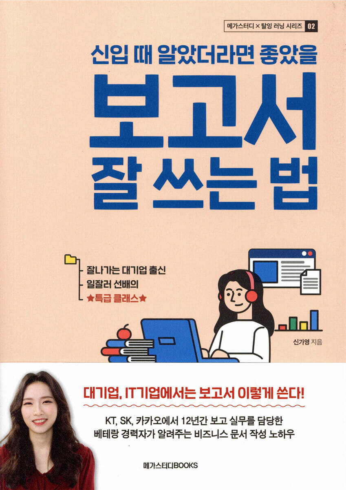

Tokenomics
Blockchain, cryptocurrency, tokenization, fintech, games, and platform governance
Information Systems · Nanyang Business School
I am a Ph.D. candidate in Information Systems at Nanyang Business School, Nanyang Technological University, where I am advised by Hyeokkoo Eric Kwon, Provost’s Chair Professor in Information Systems.
My research examines how digital technologies shape individual behavior and economic outcomes. I focus on tokenomics and generative AI, studying how new forms of incentives and technology adoption affect participation, contribution, and productivity.
Methodologically, I focus on causal inference using econometric methods and field experiments, typically in collaboration with industry partners.
Before joining NTU, I received my master’s degree in Management Information Systems from Seoul National University. Previously, I worked in corporate financial planning at Kakao and product management at SK Planet.
Blockchain, cryptocurrency, tokenization, fintech, games, and platform governance
Technology adoption, individual-level productivity, and behavioral simulation
Research
My work focuses on the economic and behavioral implications of digital technologies.
Working paper manuscripts are available upon request.
Final revisions for journal submission
Final revisions for journal submission
Final revisions for journal submission
Extended analyses in progress
Asia Pacific Journal of Information Systems, 32(3), 580–600.
Teaching & Service
AB1202 · Undergraduate · 38 students
I lead weekly seminars on probability, statistical inference, and R-based data analysis for 38 undergraduate students. I prepare teaching materials, guide tutorial problem-solving, provide individual consultations, and advise students on group projects.
BB6802 · Master’s programme · 60 students
Introduces artificial intelligence and business analytics for managerial decision-making, with practical data analysis using R.
Freelance lecturer
I deliver professional development courses on business report writing and workplace communication to employees at major Korean companies, including Samsung, Hyundai, KB Financial Group, and GS Retail.
Selected materials: Video|Media coverage (Economy Chosun)

Experience
Employee of the Year · 2018
Led financial planning and business analysis for blockchain, advertising, fintech, and commerce businesses.
Managed partnerships for the adoption of Kakao Pay payment solutions and related marketing activities.
Developed services using NFC and BLE technologies and launched a mobile loyalty service.
Evaluated business and investment opportunities and developed tailored proposals for payment processing services.
Led student teams on industry research projects.


Presentations & Public Engagement
Panelist
The Straits Times
Economy Chosun
Nanyang Business School
Appearance in NBS’s official brand film.